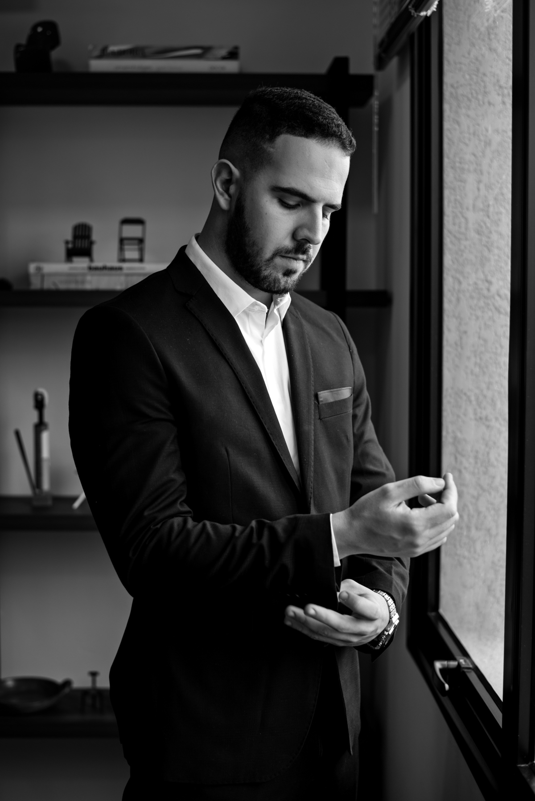
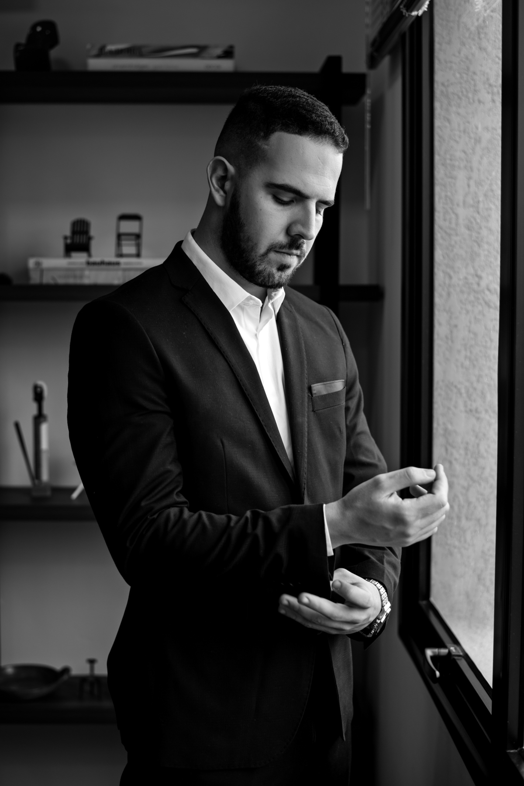

5 Reasons to do a Photo Essay.
1. Time passes, so we need to register.
You will not be young forever; imagine yourself 10, 20 or 30 years from now picking up that family album and looking at yourself in today's photos, that's when the magic happens, you will rescue so many memories, and with them many emotions arise, of joy or
2. Self-esteem, loving ourselves is very important.
Daily we see the impositions about “the perfect hair” or “the perfect body” that are said to be beauty standards, and with that it is normal to compare ourselves all the time. Doing a photo shoot often helps us discover how beautiful we are, helping us to get to know your body and how we can look at ourselves with more care and love. Making you proud of all the features that are yours alone and no one else. Looking at a photo from the rehearsal and thinking “wow, how beautiful and amazing I am” is priceless!
3. Celebrating new phases of our life.
We have always liked to have parties and celebrations for any reason. But have you ever thought how important it would be to celebrate a new chapter of your life, each achievement with photography? Celebration is one of the most beautiful reasons to have photography in our life, a birthday, a new haircut, a new tattoo or that dream house. Photos are able to show you why you worked so hard to get where you are, for all the journey you had to take to reach your goal, showing you why you shouldn't stop and always keep going. To do a photo shoot you don't need to have a specific day to happen, it can be done at any time of the year and for any reason, it's up to you to define when and how you want to celebrate life.
4. A new look at you.
We look in the mirror every day, don't we? We know exactly every flaw in our body, and what we don't like. We always take selfies in the same way, hiding some part of the body. During a rehearsal, this does not happen. You will be able to look at yourself through the eyes of a professional photographer who will record all your details, such as a look, a laugh, a gesture and even your personality, highlighting all your qualities and most striking features of your beauty.
5. Have a new experience getting out of the rut.
We always wake up and think about all the tasks to be accomplished during the day, time passes, the night arrives and we are there, in the usual old routine, almost always in the rush without taking a little time just for ourselves. So tell me, when was the last time you managed to get out of your routine and set aside an afternoon to take care of yourself, without worrying about making lunch, putting the laundry down or finishing that important project, and if you dedicated yourself only to you and your well being? A photoshoot is the best way to get out of the routine, put on your best clothes, put on makeup, and produce for the most important person, yourself. Having fun, listening to your favorite music, talking and having an incredible experience not only with photography, but with yourself, getting to know each other again and immortalizing this moment in the best way.